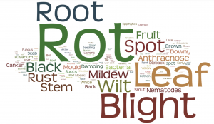

A word cloud of diseases found in The Diseases of Tropical Plants by Melville Thurston Cook[/caption] During the 19th century British industrialists and botanists searched the world for economically useful plants. They moved seeds and plants between continents and developed networks of trade and plantations to supply British industries and consumers. This global network also spread diseases. Stuart McCook is working on the history of Coffee Rust (Hemileia Vastatrix) and there are a few books that examine the diseases that prevented Brazil from developing rubber plantations. Building on this work, we're using the Trading Consequences text mining pipeline to try explore the wider trends of plant diseases as they spread through the trade and plantation network. We need a list of diseases with both the scientific and common names from the time period. The Internet Archive provides a number of text books from the end of the 19th and start of the 20th century. They were written by American botanists, but one book in particular attempts a global survey of tropical plant diseases (The Diseases of Tropical Plants). Because these books are organized in an encyclopedic fashion, it is relatively easy to have a student go through and create a list of plant disease. We're working on expanding our list from other sources of the next few weeks. Once the list is complete we'll add them to our pipeline and extract relationships between mentions of these diseases, locations, dates and commodities in our corpus of 19th century documents. This should allow us to track Sooty Mould, Black Rot, Fleshy Fungi, Coffee Leaf Rust and hundreds of other diseases at points in time when they became enough of a problem to appear in our document collection.